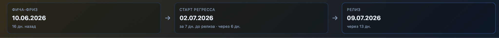
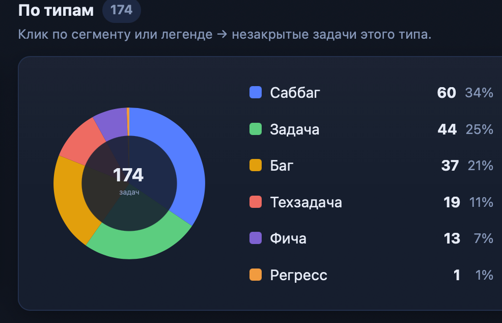
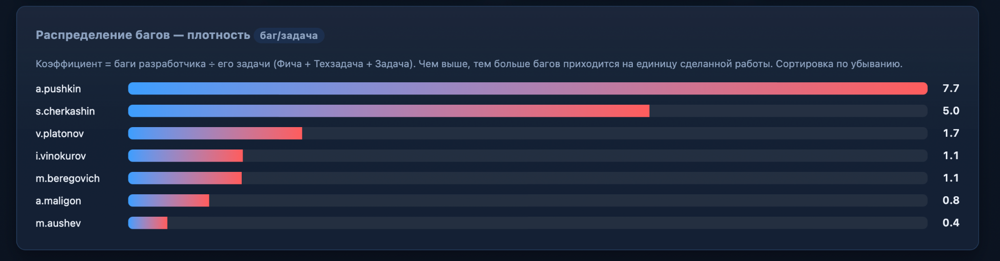
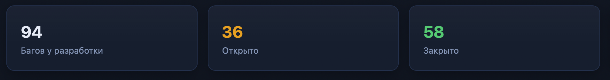

MC Cloud · Релиз v2.1
Отчет по причинам переноса релиза
1Плановый milestones

2Состав релиза на 25.06
54% релиза (94 шт.) составляют баги и саббаги.

3Сколько багов у какого разработчика?
Коэффициент = баги разработчика ÷ его задачи.

4Сдвиг фича-фриза
Фича фриз должен был состояться 10.06, а состоялся 17.06, хотя для некоторых задач еще позже.
Сдвиг фича фриза на неделю привел к тому что задачи для тестирования скопились на конец.
Из-за этого невозможно ровно распланировать нагрузку на QA на 3 недели.
Готовность задач к моменту фриза 10.06 в отчете.
- Всего: готово к фризу 21 из 31 (68%), не успели: 10, добавлено после фриза: 1.
- · Фичи: готово к фризу 7 из 13 (54%), не успели 6.
- · Техтаски: готово к фризу 14 из 18 (78%), не успели 4, добавлено после фриза: 1.
5Риск повторного переноса
Если не все баги будут пофикшены разработчиками до регресса, то регресс не завершиться вовремя и релиз снова нужно будет переносить.
На текущий момент открыто 36 багов и саббагов.

Источник: Проблема переноса релиаза 2.1.docx